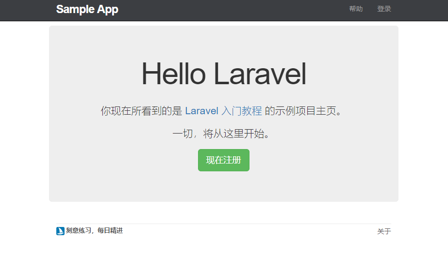

局部视图
回到代码中,我们已经拥有了顶部导航
但是还存在一个问题,就是随着导航栏功能的愈加完善,代码量也会更多.
如果把所有的视图文件都放在默认文件夹中,会让文件变得无法维护
因此我们需要把顶部导航从 default 视图中分离出来,成为一个单独的头部视图
头部和底部视图
新建一个头部视图文件
resources/views/layouts/_header.blade.php
<header class="navbar navbar-fixed-top navbar-inverse">
<div class="container">
<div class="col-md-offset-1 col-md-10">
<a href="/" id="logo">Sample App</a>
<nav>
<ul class="nav navbar-nav navbar-right">
<li><a href="/help">帮助</a></li>
<li><a href="#">登录</a></li>
</ul>
</nav>
</div>
</div>
</header>
头部文件的文件名前面加了 _ ,这样做是为了指定该视图文件为局部视图,为局部视图增加下划线是约定俗成的做法,方便了其他人快速理解文件的实际作用
创建底部视图
resources/views/layouts/_footer.blade.php
<div class="col-md-12">
<footer class="footer">
<small class="slogon">
刻意练习，每日精进
</a>
</small>
<nav>
<ul>
<li><a href="/about">关于</a></li>
</ul>
</nav>
</footer>
</div>
样式优化
resources/assets/sass/app.scss
.
.
.
/* footer */
footer {
margin-top: 45px;
padding-top: 5px;
border-top: 1px solid #eaeaea;
color: #777;
a {
color: #555;
}
a:hover {
color: #222;
}
small {
float: left;
}
ul {
float: right;
list-style: none;
li {
float: left;
margin-left: 15px;
}
}
img.brand-icon {
width: 17px;
height: 17px;
}
.slogon {
font-size: 13px;
font-weight: bold;
}
}
引入局部视图
resources/views/layouts/default.blade.php
<!DOCTYPE html>
<html>
<head>
<title>@yield('title', 'Sample App') - Laravel 入门教程</title>
<link rel="stylesheet" href="/css/app.css">
</head>
<body>
@include('layouts._header')
<div class="container">
<div class="col-md-offset-1 col-md-10">
@yield('content')
@include('layouts._footer')
</div>
</div>
</body>
</html>

{kind=link}